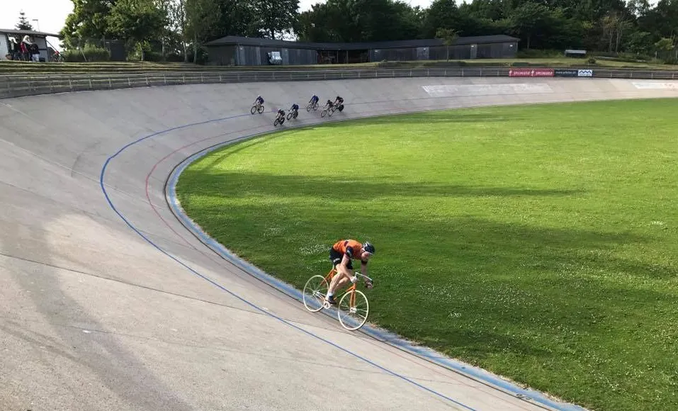

DM Omnium 2017: Drama og lussinger

Den gamle smukke Aarhus Cykelbane og en skøn sommeraften, dannede en perfekt ramme for DM Omnium 2017. Squadra Moltenis Kaptajn Bjørnsteen stillede op til i C-klassen for at vise de orange farver.
Drama i sprintløbet
C-klassens omnium startede med et sprintløb over 8 omgange.
– Jeg troede, at der skulle spurtes efter anden omgang. Så efter første omgang angreb jeg med alt hvad det gamle stål kunne trække – og vandt den første spurt, fortæller Bjørnsteen.
Det viste sig dog, at den første spurt først lå efter 5. omgang! Dén information havde Bjørnsteen ikke lige fået med! Ude på 4. eller 5. omgang opdager Bjørnsteen, at er noget galt. Ikke kun det med at spurten lå senere, men også at en forhjulsbolt mangler!

– Det må have været den kraftfulde spurt, der fik en af de 40 år gamle bolte til at løsne sig. Den anden var også på vej ud af gevindet, fortæller Squadra Moltenis løjtnant Kasper Sørensen, der fulgte løbet fra tribunen.
Lussinger i udskildnings- og linieløb
I udskilnings- og linieløbet blev det syngende lussinger til Bjørnsteen. De erfarne ryttere fra C.K. Aarhus og Kerteminde ved hvordan baneløb skal køres – og viste hvor skabet skulle stå!
– Det er nogle bomstærke gamle drenge. Jeg kunne ikke rigtig gøre noget dér. Jeg prøvede at rykke med et udbrud i starten af linieløbet – men løb tør for kræfter, indrømmer Kaptajnen.
– Men det gav dog nogle gode billeder, lyder det Squadra Moltenis Maria Winther, der var mødt frem på Århus Cykelbane med forfriskninger i picknick-kurven
Kiosken måtte melde alt udsolgt
Aarhus Cyklebane leverede et fantastisk velorganiseret arrangement. Højt sportligt niveau og feststemning på publikumlægderne.
– Det var et fedt stævne, og godt løb i alle klasser. Og det må nok siges, at komme lidt bag på os, da kiosken måtte melde alt udsolgt i løbet af 1,5 time og måtte sende stafetter efter flere øl og pølser, fortæller Michael Berling, der er sportslig ansvarlig på Aarhus Cykelbane.
(Foto/video: Uggi Kaldan og Kasper Sørensen)